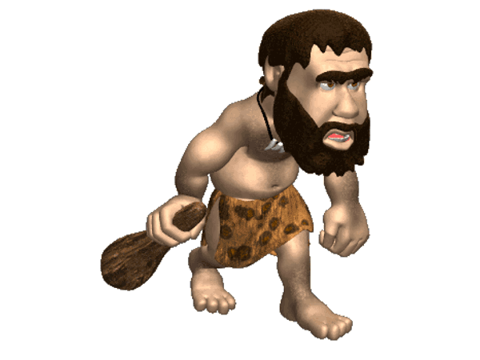
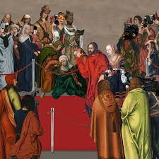

Estudios Sociales
🕰️1. Eras Geológicas y Origen de la Humanida(8vo)
Eras Geológicas:
•Prerámbrico: Comprende desde la formación de la Tierra hace aproximadamente 4.6 mil millones de años hasta
hace 540 millones de años. Durante este tiempo, se formaron los primeros continentes y océanos, y surgieron.
•Paleozoico: Se extiende desde hace 540 hasta 250 millones de años, donde se desarrollaron
los primeros organismos multicelulares, incluyendo plantas y animales marinos.
•Mesozoico: Conocida como la era de los dinosaurios, abarca desde hace 250 hasta 65 millones
de años, y se caracteriza por la diversificación de los reptiles y la aparición de las primeras aves y mamíferos.
•Cenozoico: Desde hace 65 millones de años hasta el presente, es la era en la que los mamíferos
y las aves se diversificaron, y donde se desarrolló el Homo sapiens.
•Origen de la Humanidad: La evolución humana se remonta a millones de años, con los homínidos como nuestros
ancestros. El Homo sapiens, que apareció hace aproximadamente 300,000 años en África, se caracteriza por
su capacidad de crear herramientas complejas, desarrollar el lenguaje y formar sociedades organizadas.
El estudio de las eras geológicas no solo permite comprender la evolución de la vida y la dinámica terrestre, sino que también ofrece herramientas clave para la investigación en paleontología, geología, cambio climático y otras disciplinas científicas. Además, brinda un marco de referencia fundamental para interpretar el pasado y proyectar posibles futuros del planeta.
🌍 2. Historia y Edades(8vo)

• Prehistoria: Se refiere al período antes de la invención de la escritura, donde las sociedades eran
principalmente nómadas y se dedicaban a la caza y recolección. La invención de la agricultura marcó el
inicio de asentamientos permanentes.
 •Edad Antigua: Comienza con la invención de la escritura (alrededor del 3000 a.C.) y se extiende hasta
la caída del Imperio Romano en el 476 d.C. Durante esta época, surgieron grandes civilizaciones como Mesopotamia,
Egipto, Grecia y Roma, que sentaron las bases de la cultura, la política y la ciencia.
•Edad Antigua: Comienza con la invención de la escritura (alrededor del 3000 a.C.) y se extiende hasta
la caída del Imperio Romano en el 476 d.C. Durante esta época, surgieron grandes civilizaciones como Mesopotamia,
Egipto, Grecia y Roma, que sentaron las bases de la cultura, la política y la ciencia.

•Edad Media: Desde la caída de Roma hasta el Renacimiento (aproximadamente del siglo V al XV).
Este período se caracteriza por el feudalismo, la expansión del cristianismo y el islam, y el desarrollo de
las universidades.
 •Edad Moderna y Contemporánea: La Edad Moderna (siglo XV al XVIII) incluye el Renacimiento,
la Reforma Protestante y la expansión colonial. La Edad Contemporánea (siglo XIX hasta la actualidad)
se caracteriza por la Revolución Industrial, las guerras mundiales y la globalización.
•Edad Moderna y Contemporánea: La Edad Moderna (siglo XV al XVIII) incluye el Renacimiento,
la Reforma Protestante y la expansión colonial. La Edad Contemporánea (siglo XIX hasta la actualidad)
se caracteriza por la Revolución Industrial, las guerras mundiales y la globalización.
🏛️3. Civilizaciones Clásicas(8vo)
•Cultura Griega: La antigua Grecia es conocida por su contribución a la filosofía (Sócrates,
Platón, Aristóteles), la democracia (Atenas), el arte (escultura, teatro) y la ciencia (matemáticas, astronomía).
Los Juegos Olímpicos, que comenzaron en el 776 a.C., son un legado cultural que perdura.
•Imperio Romano: en el 27 a.C., Roma se expandió por Europa, África y Asia,
estableciendo un vasto imperio. Su legado incluye el derecho romano, la arquitectura
(acueductos, coliseos) y la lengua latina, que dio origen a las lenguas romances.
La caída del Imperio Romano en el 476 d.C. marcó el fin de la Edad Antigua y el inicio de la Edad Media.
✅4. Movimientos Sociales y Religiosos(8vo)
•Feudalismo: Sistema social y económico que predominó en Europa durante la Edad Media.
Se basaba en la relación entre señores y vasallos, donde la tierra era el principal recurso.
Este sistema organizó la sociedad en clases y estableció un orden jerárquico.
•Islam: Fundada en el siglo VII por el profeta Mahoma, el islam se expandió rápidamente por el Medio Oriente,
África y Europa. Su influencia cultural, científica y religiosa ha sido significativa, promoviendo el conocimiento
y la tolerancia en diversas épocas.
•Renacimiento: Movimiento cultural que surgió en Europa en el siglo XIV, marcando el final de la Edad Media.
Se caracterizó por un renacer del interés en la antigüedad clásica, el humanismo, el arte (con figuras como Leonardo
da Vinci y Miguel Ángel) y la ciencia. Este período promovió la libre expresión y el pensamiento crítico, sentando
las bases para la modernidad.
🧭 1. Población y Culturas de América(9no)
•Primeros Pobladores: Se establecieron en diferentes regiones, desde las frías tundras del norte hasta las
selvas tropicales del sur. Con el tiempo, formaron sociedades complejas que incluían tribus y civilizaciones.
•Grandes Culturas Andinas: Entre las civilizaciones más destacadas se encuentran los Incas, que
florecieron en la región andina. Los Incas desarrollaron un vasto imperio que abarcaba gran parte de lo
que hoy es Perú, Bolivia, Ecuador y Chile. Su organización social, avances en agricultura (como las terrazas de
cultivo) y logros arquitectónicos (como Machu Picchu) son testimonio de su sofisticación cultural.
🌎 2. Geografía y Recursos Naturales de América(9no)
•Relieve: Desde las majestuosas Montañas Rocosas en América del Norte hasta los Andes en el oeste de América del Sur,
el relieve ha determinado los patrones de asentamiento y la agricultura. Las llanuras del medio oeste de EE. UU. y las pampas
argentinas son ideales para la agricultura.
•Clima e Hidrografía: América presenta una variedad de climas, desde el ártico en el norte hasta el tropical en el sur.
Los ríos, como el Amazonas y el Mississippi, son vitales para el transporte y la irrigación. En Ecuador, la economía se basa en
sectores como la agricultura (banano, cacao), la pesca y la minería, aprovechando los recursos naturales del país.
⚔️ 3. Conquista, Colonización e Independencia(9no)
•Conquista y Colonización: Los conquistadores españoles y portugueses establecieron
colonias, explotando recursos y sometiendo a las poblaciones indígenas. Este período estuvo
marcado por la violencia, la enfermedad y la imposición de nuevas religiones y sistemas de gobierno.
•Independencia Latinoamerican: A finales del siglo XVIII y principios del XIX, las
colonias americanas comenzaron a luchar por su independencia. Inspirados por la Ilustración y las
revoluciones en Europa y América del Norte, líderes como Simón Bolívar y José de San Martín lideraron
movimientos que resultaron en la independencia de varios países latinoamericanos, marcando el fin del dominio colonial.
🔄 4. Transformaciones Sociales y Políticas en el Mundo Moderno(9no)
•Revolución Industrial:La Ilustración promovió ideas de razón, libertad y derechos
individuales, influyendo en el pensamiento político y social. El liberalismo económico,
defendido por pensadores como Adam Smith, abogó por el libre mercado y la reducción de la intervención estatal en la economía.
•Ilustración y Liberalismo Económico: En 1789, la Revolución Francesa desafió el absolutismo
y promovió principios de igualdad y derechos humanos. Este evento tuvo un impacto global, inspirand
o movimientos democráticos y de independencia en América Latina.
•Revolución Francesa: En 1789, la Revolución Francesa desafió el absolutismo y promovió principios de igualdad y derechos humanos.
Este evento tuvo un impacto global, inspirando movimientos democráticos y de independencia en América Latina.
•Derechos Humanos: A medida que las ideas de libertad y justicia se difundieron, surgieron movimientos por los derechos humanos, que abogaron por la igualdad
y la dignidad de todas las personas. Estos movimientos han influido en la política y la sociedad contemporánea, promoviendo la lucha por la justicia social y la equidad en todo el mundo.
Estos cuatro temas ofrecen una visión más completa de la historia de América
🏛️ 1. Transformaciones Políticas y Sociales en el Siglo XIX y XX(10mo)
🗳️ Liberalismo Político:Este movimiento promovió ideas de libertad, igualdad y derechos
individuales, influyendo en la formación de estados modernos y democráticos. El liberalismo
desafió las estructuras absolutistas y fomentó la participación ciudadana en la política.
🌍 Colonialismo e Imperialismo Durante el siglo XIX, las potencias europeas expandieron
su dominio a través del colonialismo, estableciendo colonias en África, Asia y América Latina.
El imperialismo, que se intensificó en este período, implicó la explotación de recursos y la imposición
de culturas, generando tensiones y conflictos que perduran hasta hoy.
☢️ 2. Conflictos Globales y sus Consecuencias(10mo)
⚔️ Guerras Mundiales:La Primera y Segunda Guerra Mundial transformaron el panorama político,
resultando en la caída de imperios y la creación de nuevas naciones. Estos conflictos también llevaron
a la creación de organizaciones internacionales, como las Naciones Unidas, para promover la paz y la cooperación.
🧊 Guerra Fría: Tras la Segunda Guerra Mundial, el mundo se dividió en dos bloques: el capitalista liderado
por Estados Unidos y el comunista liderado por la Unión Soviética. Este período de tensiones políticas y militares
definió gran parte del siglo XX, influyendo en conflictos regionales y en la política internacional.
✊ 3. Movimientos Sociales y Ciudadanía(10mo)
📢 Movimientos Sociales:Desde la lucha por los derechos civiles en Estados Unidos hasta los movimientos
feministas y de derechos humanos en todo el mundo, estos movimientos han buscado la inclusión y la justicia social.
Han desafiado las estructuras de poder y promovido cambios significativos en la legislación y la percepción social.
🧑🤝🧑 Ciudadanía: La evolución de la ciudadanía ha estado marcada por la lucha por derechos y la participación
activa en la vida política. En los estados latinoamericanos, la ciudadanía se ha expandido para incluir a grupos
históricamente marginados, promoviendo una mayor equidad y representación en la política.
🌐 4. Globalización y Nuevos Desafíos (10mo)
🔗 Globalización:Este fenómeno ha facilitado la interconexión entre países y pueblos, impulsando el comercio, la tecnología y el intercambio cultural. Sin embargo, también ha generado desigualdades y tensiones entre naciones.
🧳 Migraciones y Nuevo Orden Mundial: Las migraciones masivas han cambiado la demografía y la dinámica social en muchas naciones, creando nuevos desafíos en términos de integración y derechos. En este contexto, el nuevo orden mundial y el papel del Estado ecuatoriano se han vuelto cruciales para abordar cuestiones de soberanía, identidad y derechos en un mundo cada vez más interdependiente.